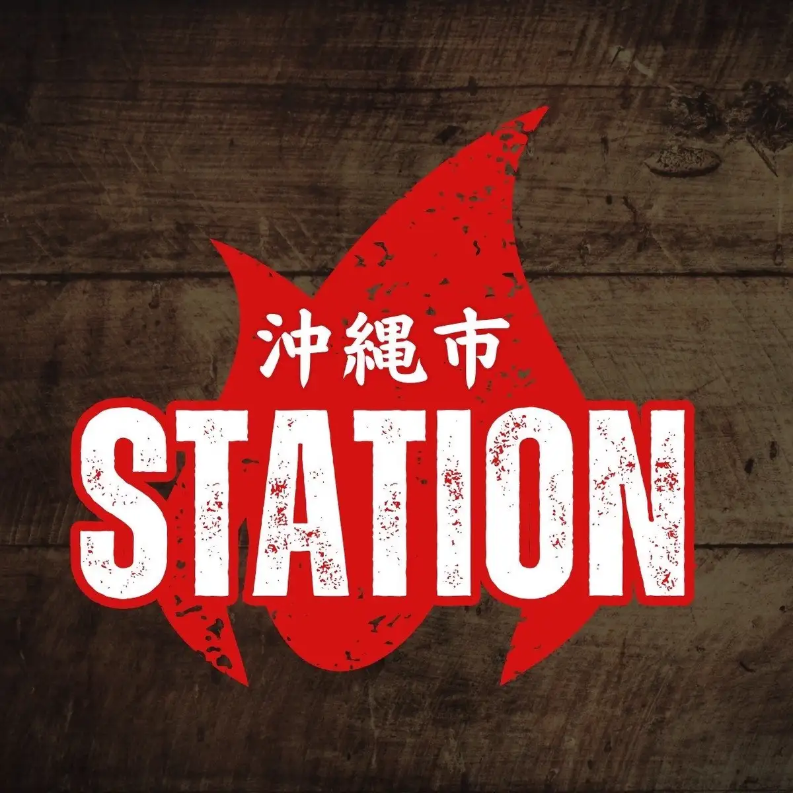
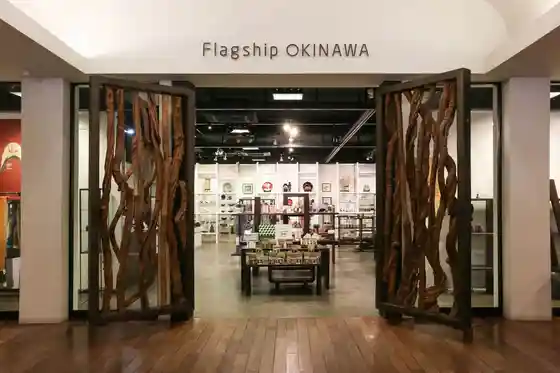

Okinawa
Okinawa · Okinawa
Okinawa
Highlighted on the Okinawa map.

Sights
BBQSTATION
Charging Plus+ (Chajingupurasu)
D&DEPARTMENT OKINAWA by PLAZA 3
Earth & Pure
Flagship OKINAWA

LIVE HOUSE Jambaraya M
PEACEFUL VALLEY.
art gallery soranoe
Eisa Hall
Esutesaron mino - Misato Odori Mise
Okinawa Guranmeru Resort
Koza Jujiro no Hekiga
Koza Kogei Kan Fundo
Sunakku Kissa Purinsu
Haniireimarin
Foteiinmarin Okinawa
Plaza Hausushoppingu Center
Bokunen'atogyararii
Ichiban Machi
Kyoko Shoten -ANKO SHOTEN
Okinawa Kodomo no Kuni Okinawa Zoo & Museum
Okinawa Ariina
Okinawa Machimai
Okinawa Sengo Bunka Shiryo Tenjikan Hisutoriito
Okinawa Kanko Bussan Shinko Kyokai
Bi Ra Yashi Park Okinawa Tonan Shokubutsu Rakuen
Meika Ryukyu So Ryukyuocho Hiden Tofu Yo Seizohambai Tokoro